Bug Race (intro)
Nu ska du få lära känna Scratch och samtidigt skapa ett roligt spel som är enkelt även om du aldrig har jobbat med Scratch tidigare. Målet är att få en skalbagge att springa runt en bana och försöka undvika att hamna utanför banan genom att styra med vänster- och högerpil på tangentbordet.
Ett exempel på det färdiga spelet finns på: https://scratch.mit.edu/projects/27697024/
Kom igång med Scratch
Skapa ett eget konto på Scratch: http://scratch.mit.edu/
Skriv ned ditt användarnamn och lösenord så att du inte glömmer det!
Tryck på Skapa på hemsidan för ett skapa ett nytt projekt
Om språket inte är svenska, tryck på jordklotet och scrolla ner tills du hittar Svenska.
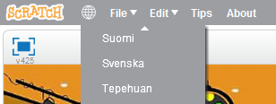
Så här ser din arbetsyta i Scratch ut:
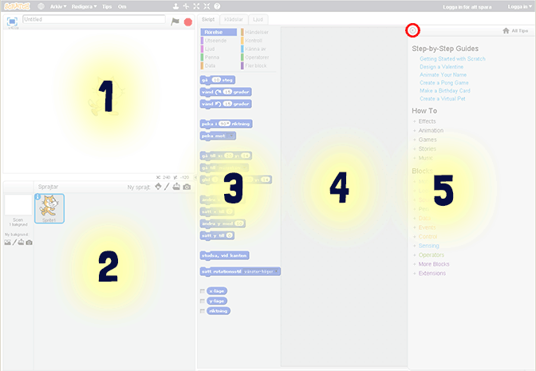
Här är din vita bakgrund som också kallas för scen.
Här kan du se vilka sprajter du använder.
I kolumnen i mitten plockar du ditt skript. Det är skript-block som finns i olika kategorier. Förutom skript finns flikar för klädslar och ljud.
Kolumnen till höger är din skriptyta – där du kodar genom att lägga dina skript.
Om du vill ta bort ett block drar du bara tillbaka blocket till mittkolumnen igen.
Här är en Hjälp-kolumn om du behöver, den kan du klicka bort uppe i det vänstra hörnet.**
Delmoment 1: Välja en skalbagge som sprajt
I ditt nya projekt visas en katt som enda sprajt på vit bakgrund. Du får börja med att ta bort katten och välja en ny sprajt.
Tryck på saxen (högt uppe i mitten) och sedan på katten så försvinner den.

Nu vill du lägga till en skalbagge istället. Tryck på knappen för NY SPRAJT:

I menyn till vänster finns en kategori som heter "Djur", tryck på den. I listan hittar du skalbaggen. Tryck på skalbaggen så att den blir markerad och sedan på OK nere till höger.
För att spelet ska bli enklare att spela måste vi minska storleken på skalbaggen. Tryck på förminskningsknappen och sedan på sprajten tills den är lagom stor (som en tummnagel ungefär).

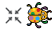
Nu är skalbaggen klar och det är dags att måla banan som skalbaggen skall springa på!
Delmoment 2: Rita en bana som bakgrund
Du ska nu få rita en grå bana på grönt gräs som skalbaggen kan springa på.
För att ändra bakgrunden trycker du först på SCEN längst till vänster och sedan på fliken BAKGRUNDER högst upp i mitten.
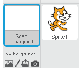 
Tryck på FYLL MED FÄRG (målarburken). Välj en grön färg och tryck på den vita bakgrunden, då fylls den med den valda gröna färgen.
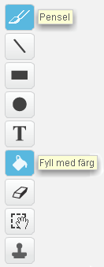
Tryck på PENSEL och välj en grå färg. Gör penseln större genom att dra reglaget ända till höger. Rita nu en oval (utdragen cirkel) - gör den så stor som du kan!
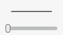 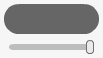
Ungefär så här skall banan se ut. Om spåret är väldigt smalt kommer spelet bli väldigt svårt. Är banan bred blir spelet lättare!
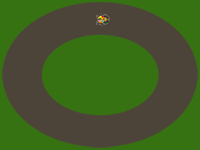
Delmoment 3: Ditt första skript**
Nu när bakgrunden är färdig kan du börja skapa ditt första skript. Glöm inte att spara ofta!
Börja med att dra skalbagge-sprajten till den målade banan (som på bilden ovanför). Tryck på SKRIPT-fliken om den inte redan är vald.
Har du lagt märke till START- och STOPP-knappen än? Se om du kan hitta dem.
Det första du ska göra är att se till att skalbaggen rör sig när du trycker på START. För att göra det måste du lägga till ditt första skript som säger:
"När jag trycker på START, ska skalbaggen röra sig."
Dra ut ett block för HÄNDELSER: "när START (flaggan) klickas på" till skriptytan. Under den kopplar du fast blocket för RÖRELSE: "gå 10 steg".

Tryck först på Händelser och dra sedan ut "när START klickas på" till fönstret till höger.
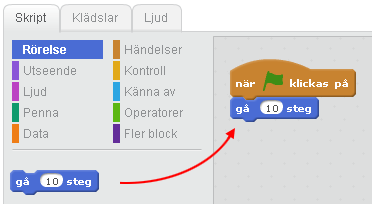
Tryck på Rörelse och dra sedan ut "gå 10 steg" och placera den som på bilden.
Testa nu vad som händer när du trycker på START. Skalbaggen flyttar sig åt höger! Det är bra, men du vill ju att skalbaggen skall röra sig framåt hela tiden. Hur gör du det?
Det kan du ordna med skriptet "för alltid" som finns under rubriken KONTROLL.
Det här är en LOOP som gör att sprajten fortsätter röra sig så länge programmet är igång.

För att skalbaggen ska fortsätta att gå måste du lägga "gå 10 steg" i mitten av "för alltid"-loopen. "Gå 10 steg" kommer då att upprepas för alltid.
Testa att trycka på START. Nu blir det fart på skalbaggen! Prova vad som händer om du ändrar antalet steg till en lägre siffra. Välj en hastighet som du tror är lagom för att kunna styra skalbaggen.
Delmoment 4: Sätt en Startposition
För att slippa dra tillbaka skalbaggen varje gång du trycker på START kan du säga åt datorn att placera den på en särskild plats varje gång du startar spelet. Detta kallas för att initiera programmet, du gör ett INIT-SKRIPT som berättar för datorn hur programmet ska starta.
Innan du gör ditt skript, flytta skalbaggen till en startposition som du väljer själv.
Välj från RÖRELSE "gå till x: y:" och koppla fast direkt under flaggan, innan loopen. De värden som står för X och Y är KOORDINATER för den startposition som du har ställt skalbaggen på.
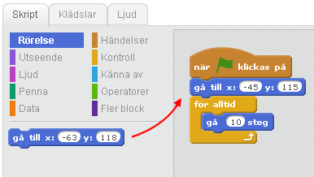
Nu kommer skalbaggen automatiskt att flyttas till sin startposition varje gång du trycker på flaggan, utan att du behöver dra den dit själv!
Delmoment 5: Styra skalbaggen
Nästa steg blir att göra det möjligt att styra skalbaggen! För det behöver du två små skript. Ett som säger åt datorn att svänga höger på skalbaggen när du trycker ned höger piltangent, och ett annat som säger åt den att svänga vänster när du trycker ned vänster piltangent.
Under HÄNDELSER finns ett block som säger "när mellanslag trycks ned". Dra två sådana block och lägg var som helst på skriptytan. Ändra den ena till vänsterpil och den andra till högerpil, du väljer i rullistan.
Koppla fast ett skript under varje block; under RÖRELSE hittar du ett som säger "vänd (pil vänster) 15 grader" och ett som säger "vänd (pil höger) 15 grader".
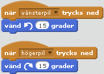
Testa vad som händer nu när du trycker på START. Du kan styra skalbaggen åt båda hållen med piltangenterna!
Delmoment 6: Ändra startriktning
Om du trycker på START igen märker du att skalbaggen behåller den riktning som den hade när du slutade sist. Det kan du lösa genom att lägga in ett till init-skript som säger åt datorn att skalbaggen alltid ska vara vänd åt höger när du startar spelet.
Välj blocket som säger "peka i 90 riktning" från RÖRELSE. Testa vad som händer om du ändrar på värdet från 90 grader till något annat. Det står även en hjälptext i rullistan när du väljer riktning.

Delmoment 7: Känna av gräset
Nästa steg är att skapa ett skript som gör att skalbaggen känner av när den hamnar utanför din utmålade bana. Hur ska den kunna göra det? Det kan du lösa med ett skript som känner av vilken färg som skalbaggen rör sig över. Du behöver skapa ett VILLKOR för skalbaggen: OM skalbaggen rör vid färgen grön betyder det att den har åkt av banan, och DÅ ska spelet ta slut - Game Over!
Välj blocket "om <> då" som finns under KONTROLL. Det här blocket säger att OM det som står i <> händer, DÅ ska något annat hända. Om skalbaggen rör färgen grön, säg Game Over!
Under KÄNNA AV finns blocket "Rör färgen <> ?". Dra den till <>, tryck på den lilla fyrkanten och sedan på ditt gräs. Den lilla fyrkanten får nu samma gröna färg som gräset.
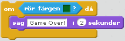
Till sist skapar du ett skript för att spelet ska säga att spelet är över om skalbaggen nuddar den gröna färgen. Välj "säg ___ i 2 sekunder" under UTSEENDE, dra in det innanför "om <"Rör färgen grön?> då" och ändra texten till det du vill ska stå.
Testa ditt spel! Händer något när skalbaggen nuddar det gröna gräset? Om inte, vad tror du att det kan bero på?
Delmoment 8: Göra klart skriptet
Något saknas! När vill du att datorn ska känna av om skalbaggen nuddar det gröna gräset? Det behöver göras efter varje steg skalbaggen tar, för att inte missa att den hamnar utanför banan. Därför måste du slå ihop skriptet som känner av gräset med skriptet som får skalbaggen att röra sig.
Lägg skriptet som känner av den gröna färgen, in i din "för alltid"-loop.
Lägg till "stoppa detta skript", under KONTROLL, om skalbaggen springer av banan. På så sätt avslutas spelet och det går inte längre att styra skalbaggen.
Ett färdigt spel!
Grattis, nu har du skapat ett spel! Det färdiga skriptet i sin helhet borde se ut så här:
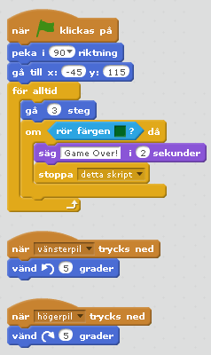
Glöm inte att spara ditt projekt!
Döp det t ex till "Bug Race" och ditt namn.
Tryck på DELA för att andra ska kunna hitta spelet på Scratch. Gå ut till projektsidan och låt någon annan testa spelet!

Saknas något? Hur skulle du vilja utveckla spelet?
Det får du göra i nästa uppgift!